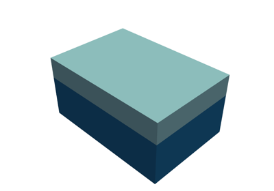
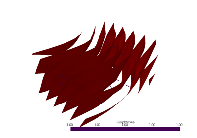

Examples# 1. Basics# 1a. Getting started 1a. Getting started 1b. Implicit surface modelling 1b. Implicit surface modelling 1c. Multiple groups 1c. Multiple groups 1c. Visualising models 1c. Visualising models  1d. Using Stratigraphic Columns 1d. Using Stratigraphic Columns 1h. Unconformities and fault 1h. Unconformities and fault 1i. Fault parameters 1i. Fault parameters 1j. Exporting models 1j. Exporting models 2. Modelling Folds#  2a. Modelling folds 2a. Modelling folds 2b. Refolded folds 2b. Refolded folds 3. Modelling Faults# 3a. Modelling faults using structural frames 3a. Modelling faults using structural frames 3b. Modelling a fault network in LoopStructural 3b. Modelling a fault network in LoopStructural 3c. Defining the fault displacement function 3c. Defining the fault displacement function Gallery generated by Sphinx-Gallery